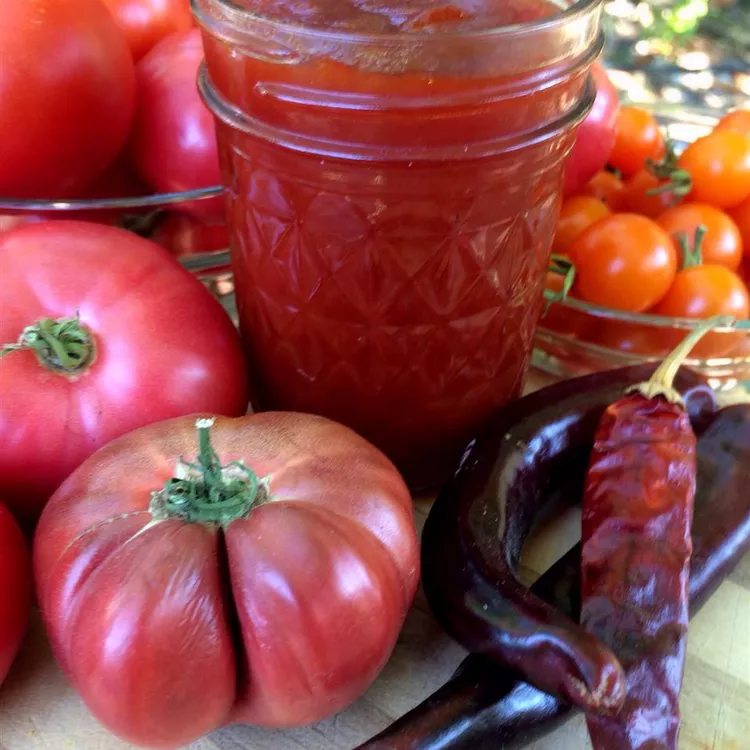

Spicy Cayenne Tomato Jam

Description
This sweet and spicy jam has quite a kick.
Ingredients
- 4 pounds tomatoes, peeled and chopped
- 1 large apple, peeled and chopped
- 1 cup raw sugar
- 1 yellow onion, diced
- ½ cup brown sugar
- ¼ cup apple cider vinegar
- 3 tablespoons lemon juice
- 1 teaspoon salt
- ½ teaspoon ground cayenne pepper, or more to taste
Steps
- Combine tomatoes, apple, sugar, onion, brown sugar, apple cider vinegar, lemon juice, salt, and cayenne in a large pot; bring to a boil. Reduce heat and simmer, stirring occasionally, until dark and syrupy, about 2 hours 30 minutes. Continue simmering until mixture thickens to a jam-like consistency, about 30 minutes more.
- Remove jam from heat and cool to room temperature, 1 to 2 hours. Transfer to lidded containers and refrigerate.